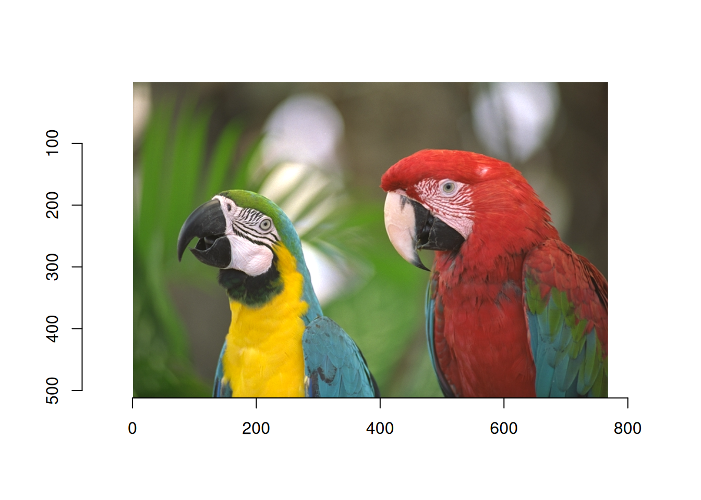
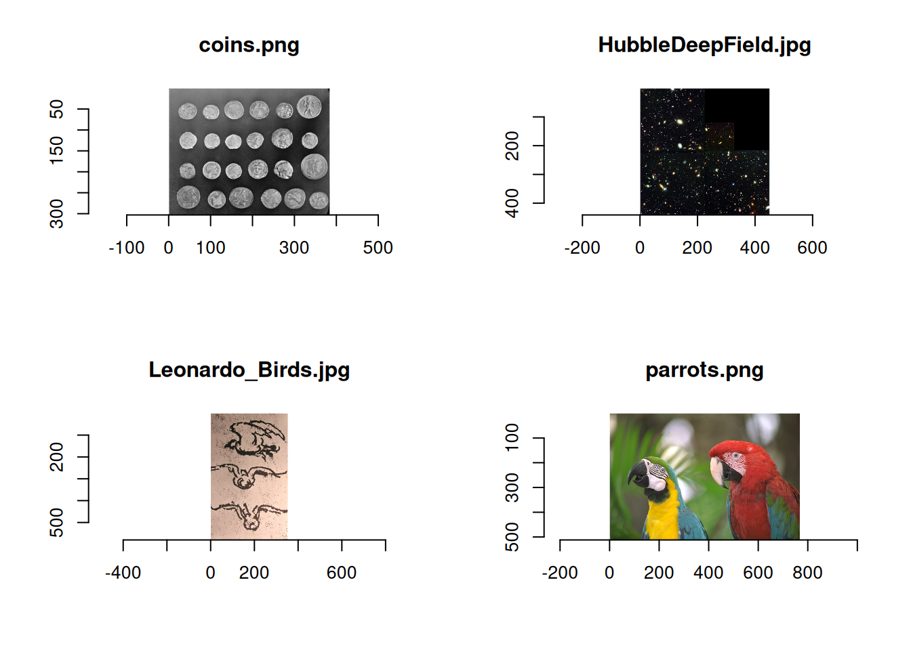
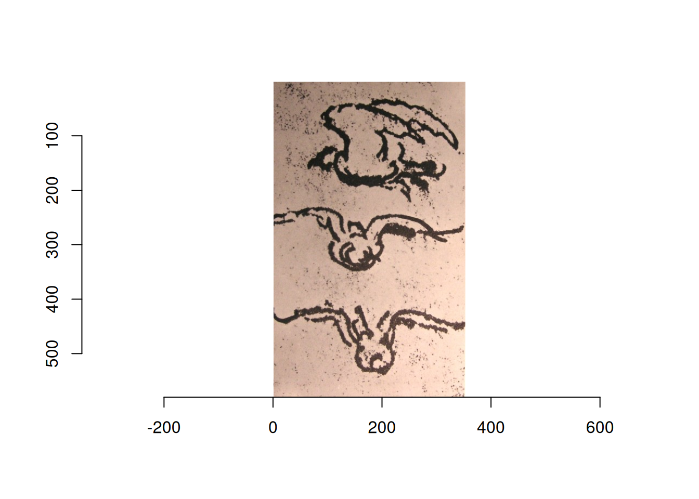
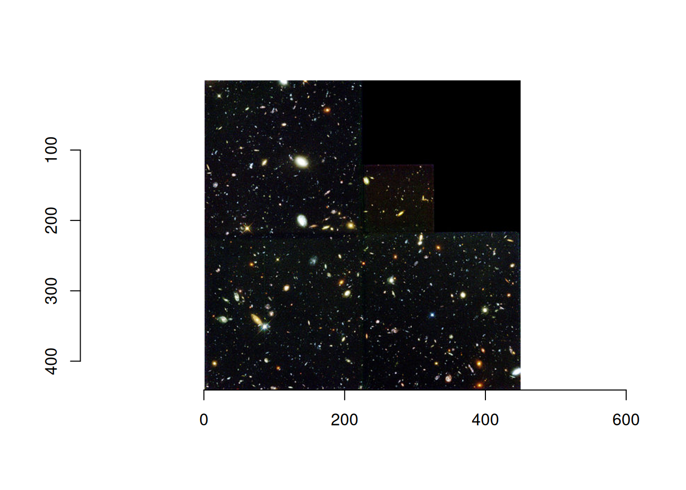
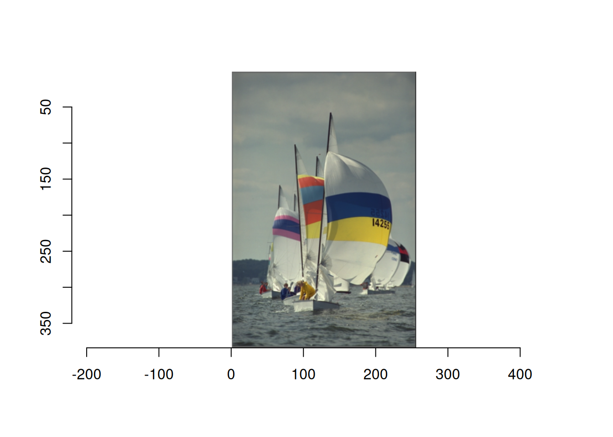

install.packages("imager")画像処理のためのRパッケージimagerの使い方
r
imagerパッケージについての基本的な使い方の紹介です
概要
Rで画像解析をしたいとなったときに、imagerというパッケージがあることを知った。 いろいろと試した結果を記す。
パッケージの読み込み
インストールは普通にinstall.packages()でOK。
読み込みは以下のようにする。
画像の読み込みと表示
画像の読み込みにはload.image()を使う。 サンプル画像が5枚(動画が1つ)用意されている。 サンプルの確認は以下のようにする。
list.files(system.file('extdata', package = 'imager'))[1] "coins.png" "HubbleDeepField.jpg" "Leonardo_Birds.jpg"
[4] "parrots.png" "tennis_sif.mp4" ボートのサンプル画像もあるのだが、ここには保存されていないようだ。
ちなみに、system.file()は、指定したパッケージがパソコンのどこに保存されているかを返す関数らしい。package='imagerでパッケージを指定して、第1引数のextdataでextra dataの保存場所を指定する。
今回はオウムのサンプル画像を読み込み、それを表示させる。 表示は通常のplot()でOK。
file <- system.file('extdata/parrots.png', package = 'imager')
img <- load.image(file)
plot(img)
複数枚の画像をまとめて読み込むには、load.dir()を使う。
dir <- system.file('extdata/', package = 'imager')
list_img <- load.dir(dir)
plot(list_img)
サンプルではなく、自分の画像を表示させるときは、適切なパスを指定すればちゃんと読み込める。 load.dir()の場合も同様。
file <- "/imagefile/hoge.jpg"
img <- load.image(file)また、サンプルを読み込むときは、専用の関数がある。
# sketch of birds by Leonardo, from Wikimedia
plot(load.example("birds"))
# Parotts from Kodak
plot(load.example("parrots"))
# The "coins" image comes from scikit-image.
plot(load.example("coins"))
# The Hubble Deep field (hubble) is from Wikimedia.
plot(load.example("hubble"))
# Boats from Kodak
plot(boats)
ボートだけはそのまま読み込める。 なにか適当に試したいときはboatsが便利。
画像の情報確認
画像はcimgという形式で保存される。 コンソールにそのままオブジェクトを入力すると、基本情報が出力される。
boatsImage. Width: 256 pix Height: 384 pix Depth: 1 Colour channels: 3 boatsは通常の画像形式で、幅256ピクセル、高さ384ピクセル、深さ1、チャンネル数が3となる。
ここで、深さはフレームのことであり、動画の場合は画像が連続するため、深さがフレーム数ということになる。
チャンネル数は色付き画像ならRGBの3になり、グレースケールなら1チャンネルとなる。
グレースケール変換
グレースケール変換はgrayscale()で簡単にできる。
第2引数にmethodがある。 デフォルトは"Luma"となっており、この場合は輝度の線形近似によりグレースケール変換をおこなう。 他には"XYZ"をとることができるが、この場合は画像がsRGB色空間にあると想定され、CIE輝度 CIE luminanceが使われるとのこと。 特にこだわりがなければ、省略する。
意外と大事になるのが第3引数。 drop=TRUEとなっている。 TRUEの場合は画像が1チャンネルで出力される。 FALSEの場合は3チャンネルが保持されたままグレースケールに変換される。 あとで色をつけたいときはFALSEにしておくと良いかもしれない。 基本的にはデフォルトのままにしておくと良いと思う。